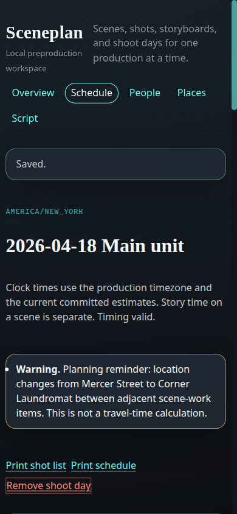
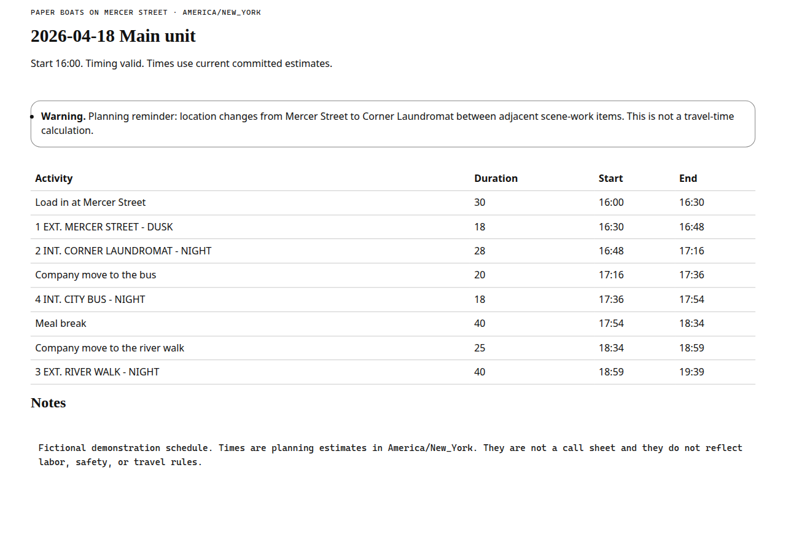
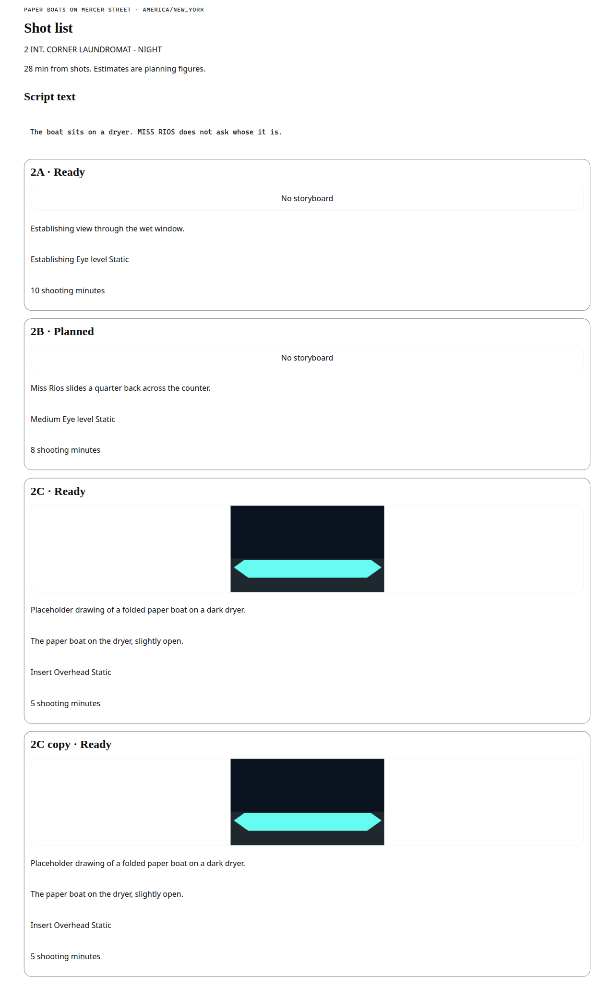

Run the workspace
Node.js 22.13 or newer. No API key.
npm ci
npm test
npm run seed
npm startThen open http://127.0.0.1:4173. Loopback is not a login. Anyone who can reach the port can change the data.
Source: cursor/sceneplan-local-preproduction-bf6f. Model map: how import and durations are decided.
What the seed shows
- Five scenes, four places, three characters, one shoot day.
- Scene 3 uses a 40 minute override. Scene 5 is unscheduled and has an unknown duration.
- The day ends at 19:39. A duplicated shot shares one storyboard image.